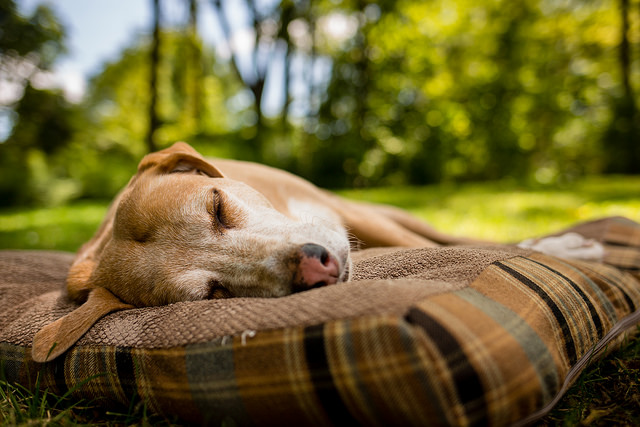

I just wanted to let all my readers know that Sleep really is my favorite thing in the whole wide world. My bff Maggie tells me that it's more fun to Run and Jump and Bark in the yard, but I know better. She's younger than me, so I can understand why she hasn't realized the folly of her ways yet. Once you get to be 5 years old, though, you begin to understand why Sleep is better.
I was about to start listing all the reasons that Sleep is better, but I'm getting tired. I'll have to let you know next time!
What is it with bipeds and loud noises in the night? I tried to settle in for my beauty rest yesterday evening and everything seemed like normal. Well, actually, the biped did seem peculiarly agitated about something. She kept looking at the clock and saying something about a ball dropping. I couldn't find the ball, but I did find myself 'dropping' off to sleep! ;) Get it!?! =) Anyway, I'd finally settled in with my bff Maggie when I was awoken by lots of yelling and banging outside. I ran out to see what the problem was and saw all these explosions in the sky! I was convinced that the felines were finally invading and tried to let all the other Canines in the neighborhood know, but my biped got really angry and made me go inside. Apparently it's just something that bipeds do sometimes. I'll never understand them.
In other news, I did manage to get an extra treat out of my biped tonight!
The biped returned today. I was beginning to worry that she would not. She was gone for at least 3 days this time. She probably thought I wouldn't notice since she sent a replacement biped to feed me daily, but a Canine always knows. (The replacement smelled like feline, Yuck!) Luckily, I had my bff Maggie to keep me company.